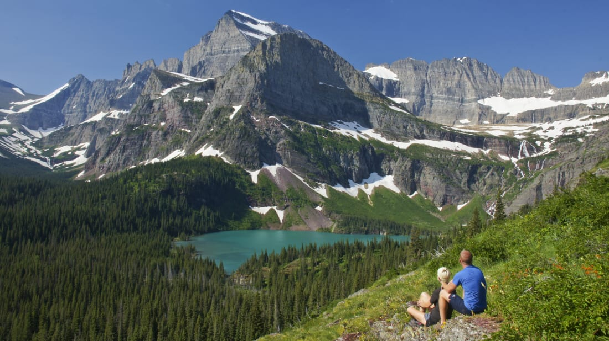

Ten Facts About National Parks

- Great Smoky Mountains National Park
- It's the Salamander Capital of the World
- Grand Canyon National Park
- Lucky visitors could see a sea of clouds below them!
- Rocky Mountain National Park
- It has the highest continuous paved highway in the US running right through it!
- Zion National Park
- It has its very own secret "subway" of tunnels running below it!
- Yellowstone National Park
- It once had a "bear lunch counter" where visitors could watch the bears raid the dumpsters!
- Yosemite National Park
- Had a nightly "fire-fall" for over a century!
- Acadia National Park
- For part of the year, its Cadillac Mountain is the first place in the US to see the sunrise!
- Grand Tetons National Park
- Its name is a reference to certain female body parts!
- Olympic National Park
- It's home to one of the world's few temperate rainforests!
- Glacier National Park
- The Mountain Goats have learned to stay near humans for protection from predators!
Click to toggle definitions
Grand Canyon
- Bigger than the State of Rhode Island
- Was carved over 6 million years
- Most dangerous animal is the Rock Squirrel
- The Skywalk is managed by the Hualapai Tribe
Great Sand Dunes
- The wind through the sand grains can sound like singing
- Visitors can sand board or sled down the dunes
- Medano Creek runs right past the dunes and is popular with visitors
- Sand surface temps can reach 150 degrees
Yellowstone
- World's first national park
- The park is contained in three states: 96% in Wyoming, 3% in Montana, and 1% in Idaho
- There are more than 290 waterfalls
- There are five park entrances and 466 miles of roads